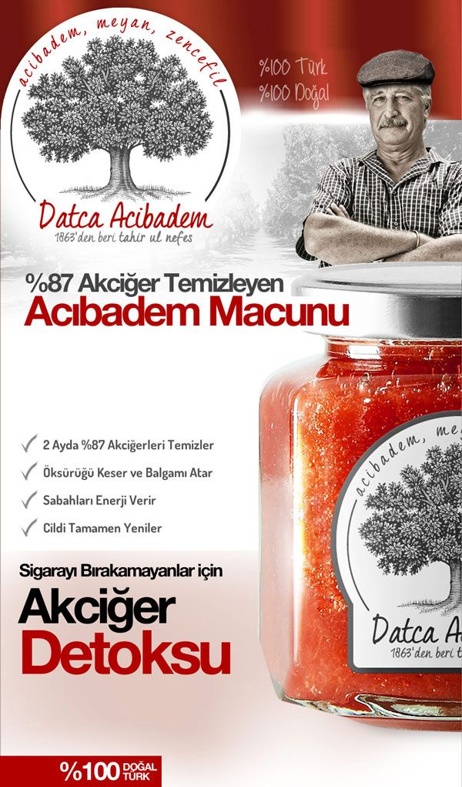
Datça Muğla’daki bahçemizden tüm dünyaya gönderiyoruz. %100 Doğal Acıbadem macunumuzla
akciğerlerinizdeki kiri pası atın. Tadı biraz acımsı olduğundan içine doğal balımızdan da kattık :)
Bizi tavsiye eden doktorlarımızın koyduğu isimle yani “akciğer detoksu” macunumuzla mutlaka
tanışın. Sigarayı bırakamayanlar için 40 yıllık ağaçlarımızdan %100 Doğal ve %100 Etkili
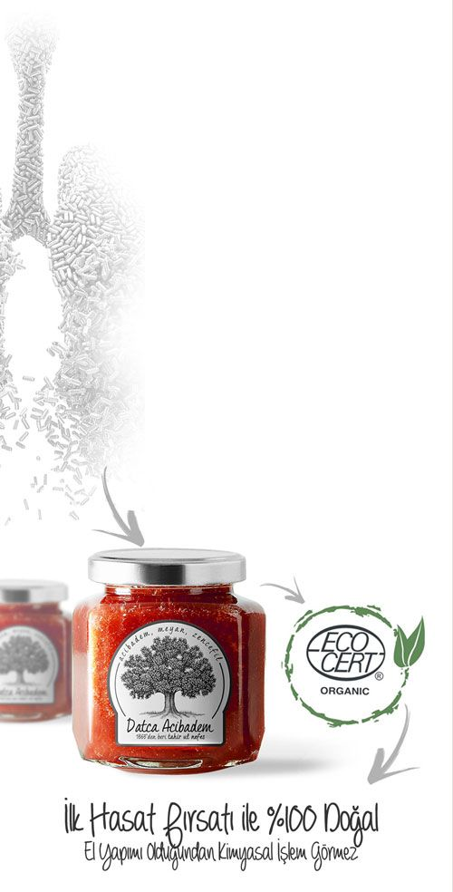
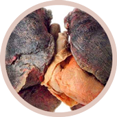
Akciğerleri %87
Temizler (60 Gün Sonunda)
Macundaki acıbadem macunu ile ciğerler yumuşar, meyan ve zencefil kökü ile
tamamen içerisini temizler
Öksürük Keser ve
Balgam Attırır
Öksürüğü ilk 10 gün sonrasında keser ve hemen balgam attırır. %100 Doğal
tek balgam attıran üründür.
Sigara Nedeni ile Tahriş Olmuş
Cildi Tamamen Yeniler
Sigaranın neden olduğu cilt zehirlenmesini keser ve cildiniz eski haline
dönerek kolajen üretmeye başlar.
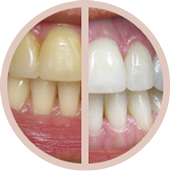
Dişleri En Az 3 Ton Beyazlatır
Hediye Organik Tozumuz ile
Hediye olarak her ürünümüz yanında organik misvak tozu ile de dişlerinizi
en az 3 ton beyazlatır. (Tamamen doğal ve katkısızdır)
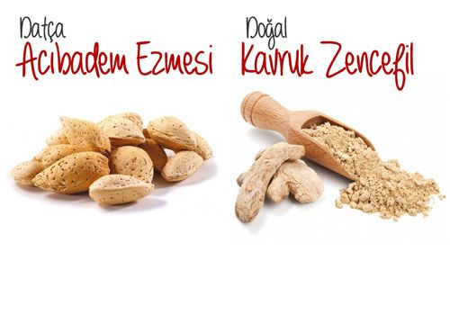
Yabani badem çeşidi acıbadem ile ciğerleriniz tamamen yumuşar ve yapışan zehir ayrışır
Toz haline getirdiğimiz kavrulmuş zencefil ile akciğer kanalları genişler, nefes
darlığını tamamen önler
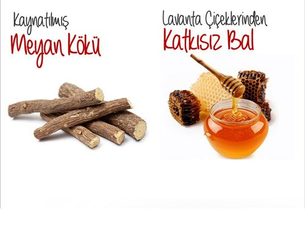
3 hafta boyunca özü çıkartılan meyan kökü sayesinde tüm zehir balgam halinde dışarı
atılır.
Macunumuzun tadı çok acı olduğundan Lavanta balı ile tadlandırıyoruz. Bu sayede
yenilebilir bir hal alır.
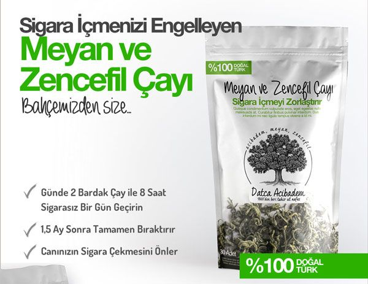
%100 Organik Meyan ve Zencefil Çayımızı her kullandığınız 4 saat boyunca sigaradan nefret
edersiniz ve sigara arayışınız kesilir.
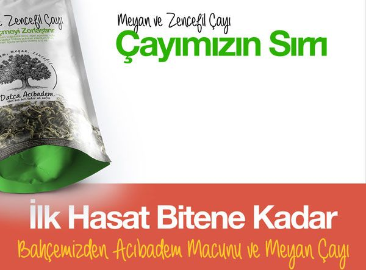
Yaş meyan kökü ve zencefil ile hazırlanan çaylarımız tadı ve kokusu ile yumuşak kıvamdadır.
Meyan kökü içerisindeki bileşenler nedeni ile beynin nikotin isteyen bölümü her çay içilişinde uyarılır.
Bu uyarım 3-4 saat devam ederek tiryakinin canının sigara içmesi de engellenmiş olur.
Müşterilerimiz ayrıca kış ayları içinde tadını sevdiklerinden kullanıyorlar.
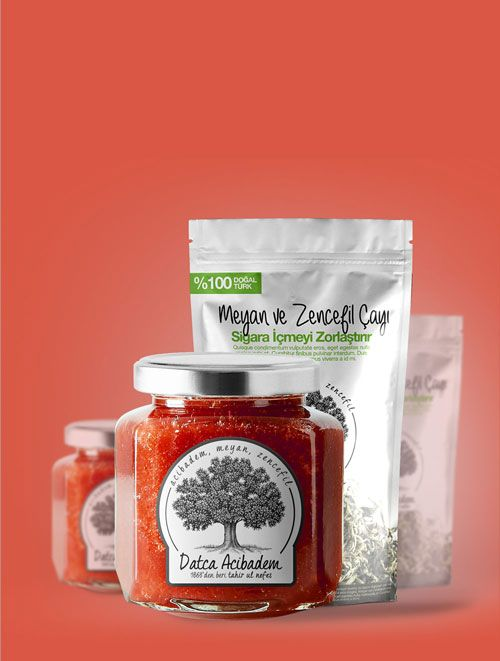
99 TL Yerine 64 TL
Sınırlı Stok
Tahmini Bitiş Süresi
Bahçemiz: Aydın Çayırı Caddesi, No:12 Datça / Muğla
Siparişiniz Sonrasında Sizi Arayarak Kullanım Talimatını Tarafınıza
Aktaracağız.
Tüm ürünlerimizi mazaretsiz 15 gün içinde geri iade alabiliyoruz. Lütfen geri iade için “Aras Kargo” ile
karşı taraf ödemeli gönderim sağlayınız. Ürün elimize ulaştığı andan itibaren 2 iş günü içerisinde
ücretinizi geri iade yapıyoruz.
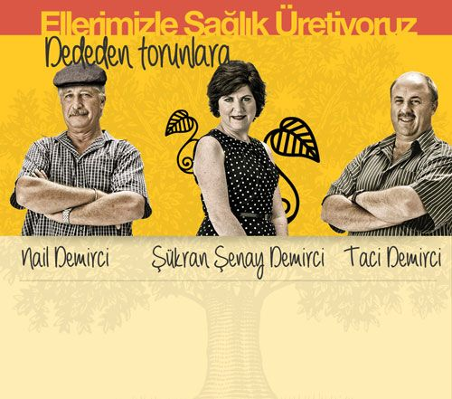
Dedemizin dedesi Seyfullah Demirci’nin başladığı Acıbadem ekimi hikayemiz
devam ediyor. O zaman eczahanelere verdiği macun ile maden ve kömür yataklarında çalışan işçilerin
iyileştirilmesi için kullanılıyordu.
1950’lerden sora fazlalaşan sigara kullanımı nedeni ile ürünlerimiz doktorlar tarfından
reçetesiz olarak tavsiye edilmektedir.
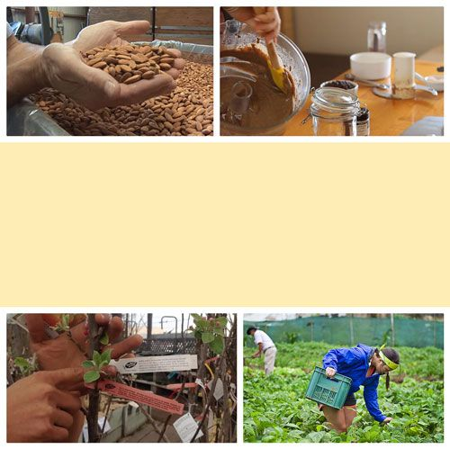
Kulaktan kulağa tüm dünyaya yayılan macunlarımız ile özellikle Türk
vatandaşlarımız olmak üzere yabancı müşterilerimizde her geçen gün fazlalaşmaktadır.
18 yaşından küçüklere tavsiye etmediğimiz macun ve çaylarımızın tadlarını komşularımızda
yetişen lavanta balları ile tadlandırıyoruz.
Tamamen el yapımı ürünlerimiz hiçbir kimyasal işlem görmemiştir.
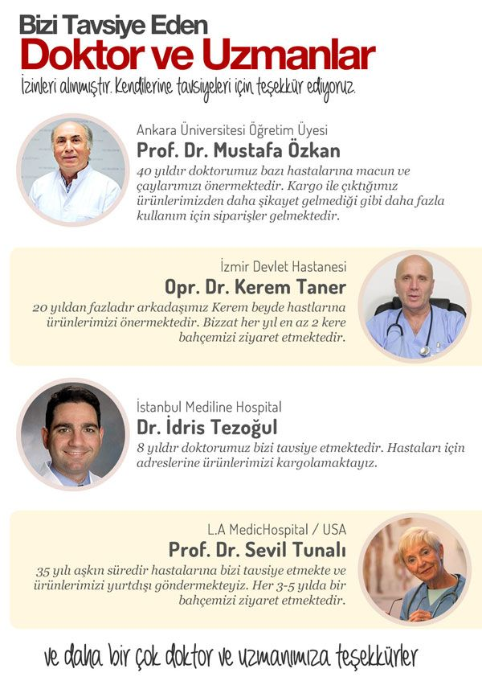
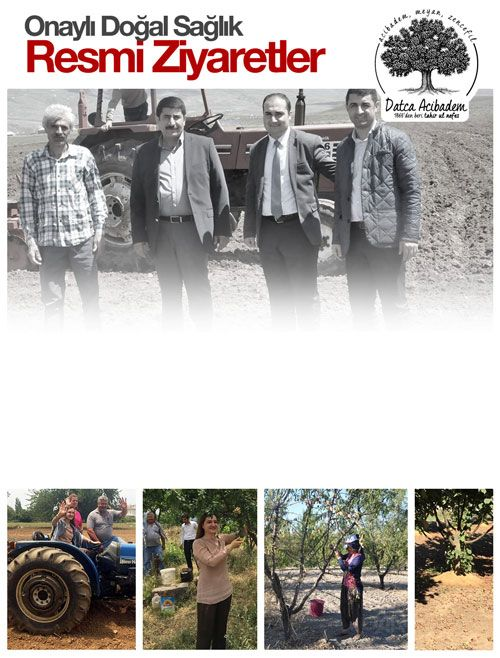
İlgili bakanlıkların il müdürlüklerince hem denetim hemde ziyaret amacı ile
yıl içerisinde 4-5 kez ziyaret ediliyoruz.
Tavsiyeleri ve önergeleri ile kendimizi daha da iyi geliştirerek bizi sevenlere daha iyi ve
daha doğal ürünler üretmeye çalışıyoruz.
99 TL Yerine 64 TL
Sınırlı Stok
Tahmini Bitiş Süresi
Bahçemiz: Aydın Çayırı Caddesi, No:12 Datça / Muğla
Siparişiniz Sonrasında Sizi Arayarak Kullanım Talimatını Tarafınıza
Aktaracağız.
Tüm ürünlerimizi mazaretsiz 15 gün içinde geri iade alabiliyoruz. Lütfen geri iade için “Aras Kargo” ile
karşı taraf ödemeli gönderim sağlayınız. Ürün elimize ulaştığı andan itibaren 2 iş günü içerisinde
ücretinizi geri iade yapıyoruz.
99 TL Yerine 64 TL
Sınırlı Stok
Tahmini Bitiş Süresi
Bahçemiz: Aydın Çayırı Caddesi, No:12 Datça / Muğla
Siparişiniz Sonrasında Sizi Arayarak Kullanım Talimatını Tarafınıza
Aktaracağız.
Tüm ürünlerimizi mazaretsiz 15 gün içinde geri iade alabiliyoruz. Lütfen geri iade için “Aras Kargo” ile
karşı taraf ödemeli gönderim sağlayınız. Ürün elimize ulaştığı andan itibaren 2 iş günü içerisinde
ücretinizi geri iade yapıyoruz.
nasıl kullancaz bunu bide fiyat ne?
macunu sabah aç karnına ve çayı da canın sigara istediğinde içmelisin diye söylediler bana. bakalım kargom geldiğinde bu şekilde deneyeceğim.
Barış kardeşimin söyledikleri doğru. Macunu sabah 1 kaşık olarak alın ki vucüt sigara zararlarından ve alışkanlığından kurtulsun. Meyan çayını ise gün içinde canınız sigara isterse için , isteğiniz nasıl geçtiğini göreceksiniz. Ben sigarayı tamamen bırakalı 8 gün oldu , bu macun ve çaydan Eylül ayında çiftliğinden almıştım. Yani herhalde 40 gün sürdü tamamen bırakmam. İlk sigarayı bırakmaya çalıştığımda günde 3-4 fincan çay içiyordum , ilk 7 gün çok zor oldu ama 40. gün sonunda sigarayı tamamen bıraktım artık resmen canım istyemiyor. Hatta yanımda içenler olunca mişdem bulanıyor. Anlayacağınız doğal birşeyler yeyip içtikte zaten bünye zararlı şeylere karşı duruyor. Bu fırsatı bize sunan pamuk yanaklı Demirci ailesine teşekkür ederim.
macun cam ise alırım yoksa imkanı yok evime sokmam. madem doğal diyorsunuz cam kavanozda mı bu?
Evet cam. biz hanımla beraber kullanıyoruz , biten macun şişelerine de reçel koyduk :)
Sigarayı bırakmak zorunda kaldım çünkü sağlığım tehdit altındaydı. Bende bu çıkmazın içine düşmüş ve çıkamıyordum. 1 sene once bu macun hakkında 1-2 sohbet çalındı kulağıma ve denemeye başladım. Aradaki sonuçları size göstermem gerek. Lütfen akciğerlerimde ki sigara etkisini kendi gözlerinizle görün ve lütfen sigaradan kurtulun. Bana tekrar nefes aldığımı hatırlatan , öksürük krizlerinden kurtaran , sıhhatimi tekrar kazanmama yardım eden acıbadem macununu hazırlayan herkese teşekkürü borç bilirim.
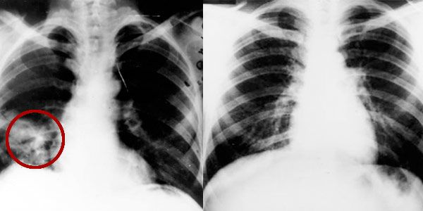siparişi verir vermez aradılar adres teyiti aldılar sağolsunlar ama kargom 3 gün oldu hala gelmedi. kargo firmanızı değiştirmenizi öneririm.
abi adamlar muğladan kargo gönderiyor. doğal ürün elde edip taze taze gönderiyorlar. fabrikasyon mallar ile karıştırmayın bu tarz organik ürünleri , işinize gelmiyorsa almayın. benim elime 6 günde geçti ama beklediğime değdiği için ağzımı açamam Allah çarpar. Emeğinize sağlık Demirci ailesi..
sanırım ben şanslı olanlardanım , izmirde ikamet ediyorum ve 2 gün içinde elime ulaştı kargo. kapıda kredi kartıyla ödedim , birde bankadan taksit yaptırdım :)
kargo uzun sürdü diyenler çiftlikten gidip alabilirler. adamlar yıllardır zaten çiftlikten satış yapıyorlar.
valla her ne olursa olsun 1 hafta bekletmeye hakları yok , ben bunu bilir bunu söylerim. eğer bir işi yapıyorsan düzgün yapacaksın , kimseyi boş yere oyalamayın.
Normalde hiç alışkanlığım değildir teşekkür etmek ama bu macunu bulan , karışımı hazırlayan hatta bu bitkilere su veren kişini bile ellerini öpüyorum. bu kadar kısa sürede merdiven çıkışımı hızlandıran , nefes aldığımı hissettiren kişilere ne desem az. sigarayı bırakmak için yapmadığım kalmamıştı 15 yıllık tiryakiyim böyle etkili bir yöntem görmedim. Bana bile sigarayı bıraktırdınız ya helal olsun
ne kadar sürede bıraktın ve psikolojik olmadığına emin misin?
detayları ve zamanları çok iyi hatırlamıyorum ama normalde 15 günde bitmesi gereken çayı ben 1 haftada bitirdim. hem canım çok sigara istediği için çok içtim hemde tadı güzel diye içiyordum. macunu her sabah 1 kaşık aldım ve nefes almaya 5. günde başlamıştım. Zaten macunu yutarken daha boğazınızda ki sigara katranını söke söke gidiyor aşağıya.. toplamda 2 ay kullandım ama şuan 20lik gençlere taş çıkartırım gibi hissediyorum , sigarayı bıraktım ve yaşama tekrar tutundum. yediklerimden bile daha çok tat alıyorum artık öyle düşünün. psikolojik olma kısmına gelirsek ben akupuntur mu yaptırmadım elektroni ksigara mı içmedim neler yaptım neler ama hiçbiri sigarayı bıraktıramadı , sadece bu dayının yaptığı Datça Macunu beni bu illetten kurtardı
firmanın elemanı gibi yorum yazıyorsun, neyse ben araştırmaya devam edeyim.
0533 521 71 02 dilediğiniz zaman arayabilirsiniz. bursa'da ikamet ediyorum ve firmayla uzaktan yakından alakam yok. Tek yapmak istediğim şey ben bu sigaradan kurtulmak için çok uğraştım ve sadece bu şekilde kurtuldum. Şuan neler çektiğini ve neler hissettiğini benden iyi kimse anlayamaz. Sana ve senin gibi düşünenlere yardımcı olmak adına bu kadar yazdım , gerisini istersen telefonda sorabilir ve gerçekliğmi teyit edebilirsin.
benim yan benchimde çalışan bi bey vardı adam 14 yıllık laborant ve sürekli ağzında sigara var. adam formüllerden karışımlardan kafayı kırmış ağzından sigarayı eksik etmeyen bir adamdı. son 1 aydır sigara içmiyor , geçen gün sordum nasıl bıraktığını o da bana Datça Macununu anlattı. bende siparişimi verdim umarım Murat bey gibi bende bırakabilirim bu illeti..
macunun tadı biraz sert Hatice ama çay çok güzel. ben 9. günümdeyim ve çok rahatım nefes alırken zorlanmıyorum , yürürken yorulmuorum leş gibi sigara kokmuyorum. sadece önden bilgilendirmek istedim , iyi günler.
çayı nasıl yapıonuz?
sıcak suyu bardağa koyup bile demleyebilirsin ama ben french preste yapıyorum. normal demlik yok maalesef iş yerimde.
demlikte olur demi?
2 aylık hamileyim bu karışımı kullansam sorun olur mu?
asıl hamile hamile sigara içersen sorun olur. Doğal ürün bal mis gibi afiyetle ye ve hemen sigarayı bırak!
sorumsuz insanlıktan nasibini almamış insanların hamileyken sigara içmesini birde toplum bunu içinde açık etmesini hiç anlamıyorum. senin annende hamileyken sigara mı içti ne yaptı da bu kadar ruhsuz ve sorumsuz oldunuz anlamıyorum. kocana da yazıklar olsun , kendi kanından kendi canından doğacak çocuğu senin gibi bir kadından yapıtğı için.
hastalığınızı bilmiyorum ama kemoteropi sonrası sigarayı bırakmıştım sonra tekrar başladım. bu macun ile tekrar aynı şekilde hissediyorum ve canım hiç sigara istemiyor.
hastalığınızı bilmiyorum ama kemoteropi sonrası sigarayı bırakmıştım sonra tekrar başladım. bu macun ile tekrar aynı şekilde hissediyorum ve canım hiç sigara istemiyor.
tadı çok kötü , ne kadar zorlarsam zorlayayım sabahları içemyorum. içebildiğim günler ise gerçekten kendimi iyi hissediyorum ama bence tadını değiştirmeliler.
sigaranın tadı güzel geliyorda ballı macunun tadı kötü mü geliyor. kendinizi zorlamalı ve 1 ay bu macunu yemelisiniz. bu kadar insan sigarayı bırakmış , ispatlanmış bir çözümğün tadına laf etmek günahtır.
zevkler ve renkler tartışılmaz , bence tadı gayet güzel karakovan balı gibi sert ama güzel.
macuna bende alışamadım ama çay inanılmaz lezzetli. mayhoş bir tadı var çok hoşuma gidiyor.
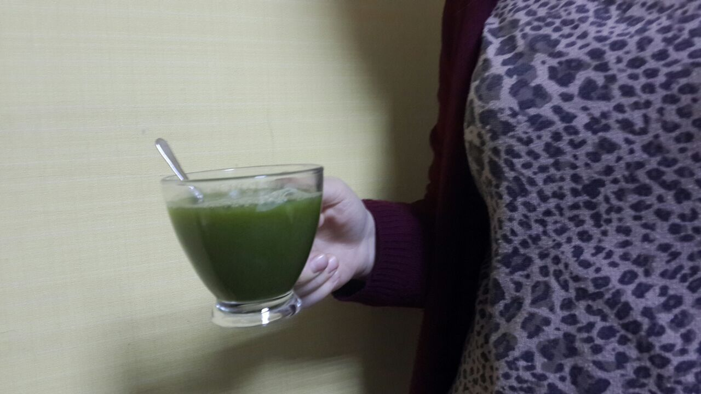ellerinde stok kalmadığını en kısa sürede stok geldiğinde bana ualaşacaklarını söylediler. acaba alıp kullanmayan var mı , parasını versem? 1 haftada sigaraya vereceğim parayla ömür boyu sigaradan kurtulabiliyorsam denemeye değer.
başkasından alma sadece bu telefon numarasından al bence. sonuçta sağlıkla ilgili birşey alıyorsun. stok sorununu umarım en kısa sürede çözerler çünkü artık çok meşhur olodular.
bana 12 gün sonra ulaştırmışlardı.
evet bugün aradılar ve siparişimi onayladım. toplamda 4 gün bekletildim ama neyse , ilgilerinden dolayı teşekkür ediyorum. şimdi sıra kargonun gelmesini beklemekte.
diş beyazlatma tozum gelmedi, aradım ama ulaşamadım. bana hemen ulaşın!
bu saatte elbete ulaşamazın. sabahı bekle
sitelerinde 7/24 yazıyor , benim hemen ulaşmam lazım. kargo gündüz gelmiş kardeşim almış kargoyu ve eksik gönderilmiş toz çıkmadı.
sabah aradılar ve konuştuk. tek paket alınca beyazlatma tozu göndermiyorlarmış.. bilseydim 3lü alırdım madem öyle , ben bu sigarayı içtiğimi hafızamdan silmek istiyorum. dişlerim bu haldeyken bana yardımcı olmalarını dilerdim.
adamların ne suçu var anlamadım. sen yanlış sipariş vermişsin niye sana yardımcı olsunlar ne yapsınlar eve gelip dişlerini mi temizlesinler? kullan ilk kavanozu sonra 3lü alırsın eğer o zaman göndermezlerse burada şikayetçi olursun. bu arada bende teyzem için tekrar sipariş verdim , kendim kurtuldum çok şükür şimdi sıra teyzemde.
diş tozunu mutlaka kullanın çok kısa bir süre içerisinde dişlerimi oldukça beyazlattı
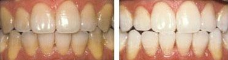sadece bende mı aşırı yemek yeme isteği yapıyor acaba? yorumlarda başka kimse de görmedim?
sigarayı bıraktığınızda yemeklerden daha çok tat alırsınız ve yemek yeme isteğiniz geri gelir. kilo almamak için lütfen dikakt edin. ama merak etmeyin artık sigaradan kurtuluyorsunuz :)
çaya bayıldımm bayıldımmmm. çayın içine sabahları 1 kaşık macun katıp öyle tüketiyotum , yanımda sigara içenlere artık nefretle bakıyorum. elimde değil resmen iğreniorum ya çok acayip
nereden nereye geldim ya , sigaradan nasıl kurtulurum diye googleda geziyordum o haber senin bu kaynak benim derken bir baktım Nail amcanın çiftliktne gönderdiği sigara bıraktırma macunundayım. sipariş vereyim mi vermeyeyim mi bu kaynağa nasıl geldim onu bile anlamadım..
galatasaraylı arifin manchstera attığı golu bulmuşsun. şaka şaka bence araştırmaların sonucunda doğru yeri bulmuşsun. hayırlı olsun sinem.
ahahaha bende başarılı türk girişimcileri haberlerinden geldim. sanırım ortak bir nokta arıyorsak o da Demirci ailesinin sigara bıraktırmada çok başarılı bir işletme olduğudur :)
yılarca tatile giderken gördüğüm tabela meğer bu çiftliğe aitmiş. seneye yaza uğrayacağım. o zamana kadar sigara içmeye devam , seneye görüşürüz organik besinci çiftçi kardeşlerim